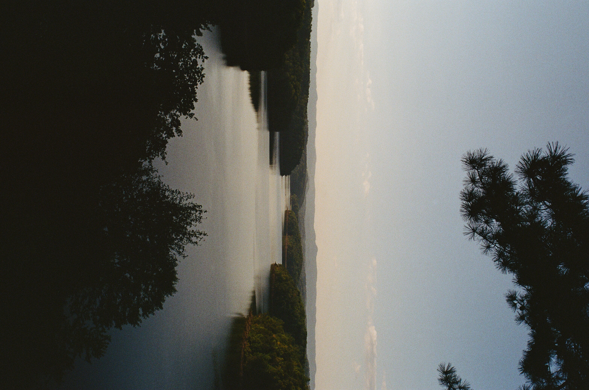
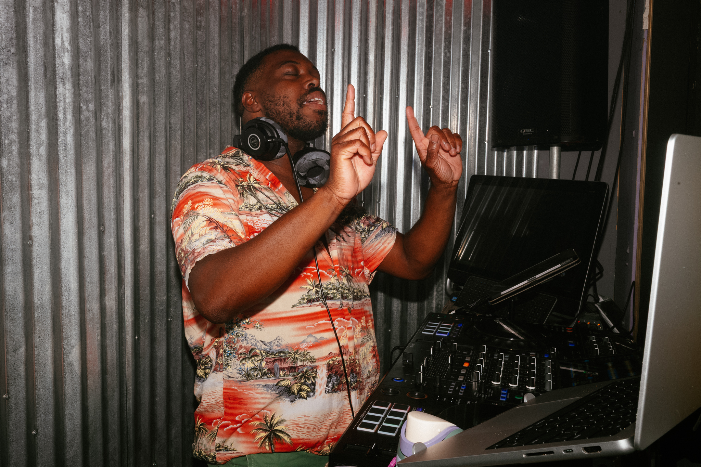
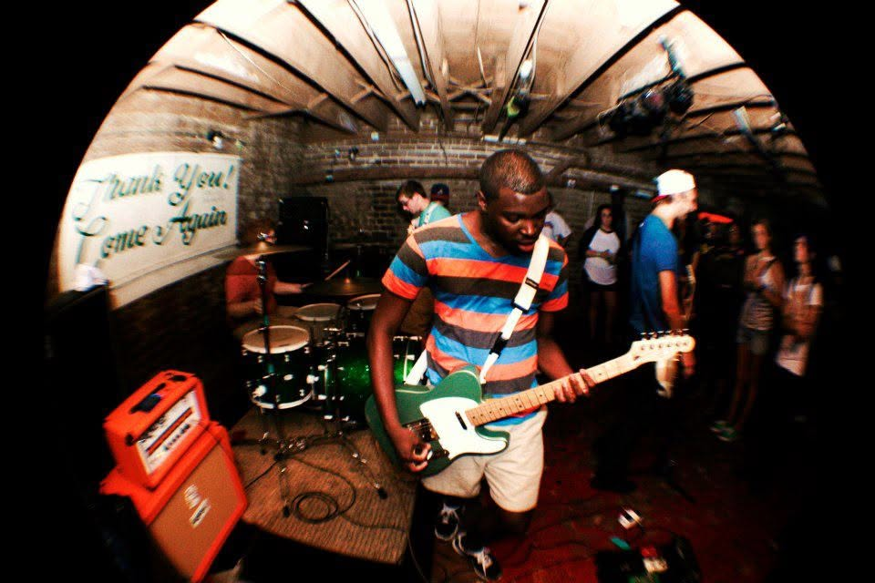
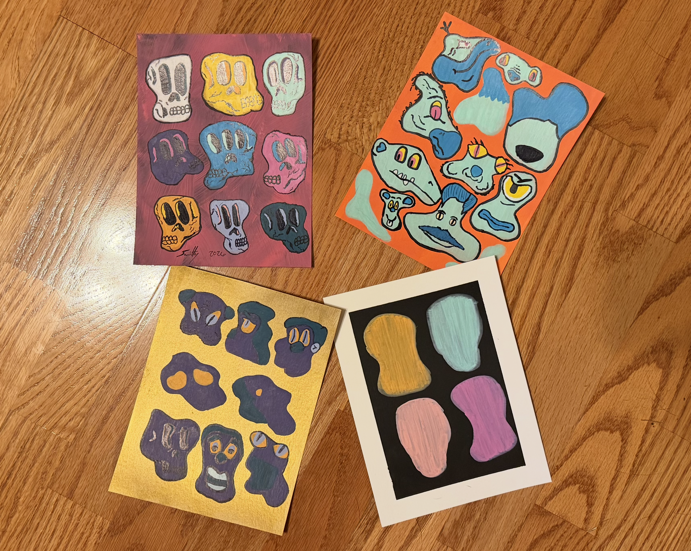
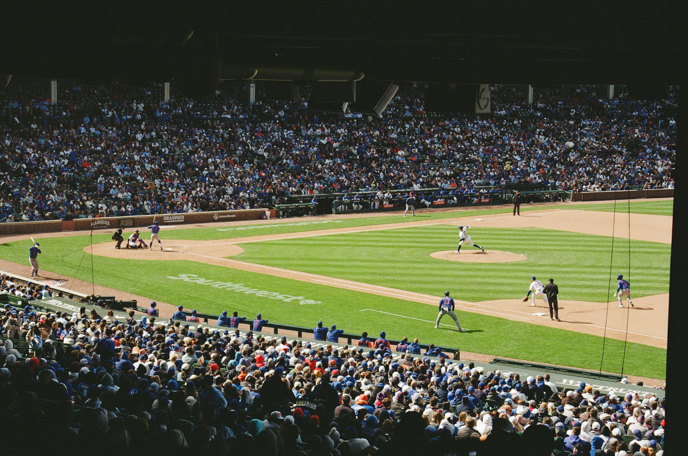

My Hobbies
In my free time, I enjoy a variety of hobbies that allow me to relax, learn new skills, and express my creativity. Here are some of my favorite hobbies:
- Photography: Capturing moments and landscapes through the lens of my camera.
- DJing and Guitaring: Mixing music and creating unique soundscapes.
- Drawing: Creating art and expressing creativity through visual mediums.
- Traveling: Exploring new places, cultures, and cuisines.





Home
Resume
Contact